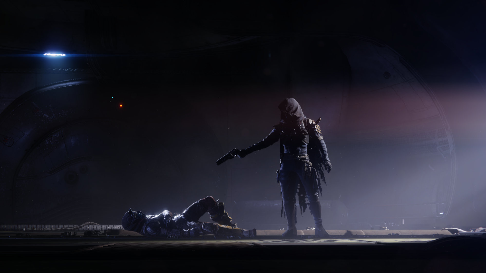
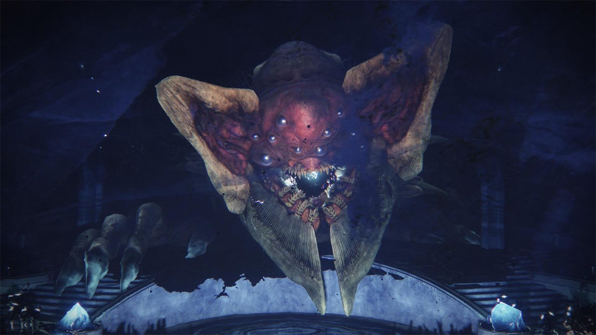

Krátce po událostech s Rasputinem na Marsu, opouštíme Anu a vydáváme se do Útesu - širokého pásu planetek a asteroidů, uprostřed čehož se nachází tzv. Věznice Starších (Prison of Elders) ve které právě probíhá masová vzpoura. Na naší cestě nás doprovází Cayde-6, člověk v těle humanoidního robota - Exo. Cayde je jeden ze tří současných velitelů skupiny Vanguard, a kvůli důležitosti této mise jsme mu byli přiděleni. Dále nás doprovází také Petra Venj, žena rodu Awoken - dříveji lidé, ovlivněni překročením prahu brány mezi světy, tzv. Distributary. Od lidí se liší pouze velmi odlišnou barvou pleti, vlasů a očí. Petra k misi byla přiřazena z potenciálního objasnění důvodu vzpoury. Ve věznici je totiž zavřený Uldren Sov, zrádce lidu Awoken, a je zdaleka nejmocnějším věznem v zařízení. Po příletu do věznice se dva Strážci a Petra pustí do práce. Cayde dokáže aktivovat hlavní bezpečnostní protokol věznice, a tak i učiní. To však nevyjde podle plánu, a Cayde se společně s místnosti centrály zřítí na nejspodnější úroveň vězení, a ztratí kontakt s Petrou a naším Strážcem. Zřítí se na úroveň, kde byl držen Uldren. Jak se trosky centrály usadí. naskytne se Caydovi pohled, který doposud nikdo neviděl: 8 párů monstrozních očí ještě monstroznějších stvoření. Vypadají jako zombifikovaní Padlí, ale naprosto nepřiměření. Mezi nimi a Caydem - horda právě oživených monster téže vzdáleně připomínající Padlé. Monstra jsou sice silná, ale Cayde je všechny poráží s lehkostí. V tom okamžiku jeden z monstroznějších Baronů sestoupil, a jediným úderem poslal Cayda k zemi. Cayde, stejně jako náš Strážce, má svého Ghosta; jmenuje se Sundance. Přivolá ji, aby se v rychlosti dal do pořádku; jeho největší a poslední chyba. Jakmile se Sundance objeví, jiný z Baronů na ni namíří svoji pušku, a vypálí - Sundance se Caydovi před očima roztříští v záblesku světla, a zanechá ho navždy smrtelným. Baron stojící přímo před ním využije této příležitosti, a znovu jediným úderem prorazí Cayda skrz nedalekou stěnu. Všechna naděje se zdá ztracena, když v tu se objeví Uldren nad ležícím Caydem, a namíří na něj jeho vlastní zbraň, Ace of Spades. Zbytek už je historie.


Po Caydově smrti se Uldren a jeho armáda Scorn společně s jeho Barony rozutekli po celém Útesu. Náš Strážce se za nimi obratem vydal. Na své cestě jsme se seznámili s neobvyklým charakterem z rasy Padlých (v jejich jazyce Eliksni) - jmenuje se Spider, a funguje jako takový mafioso Útesu. Jeho jméno je známo všem Eliksni a Awoken, avšak jen málo ho kdy spatřilo tváří v tvář. Spider nám prozradil, že ví, kde se Baroni i Uldren nacházejí, a za nemalou sumu nám po jednom prozradí, kde každý z nich operuje. Jednoho po duhém jsme s Ghostem vystopovali a zabili, až došlo na nejsilnějšího z nich - Fikrul, fanatik. Fikrul byl de facto první z řad Scorn, a také měl jedinečnou schopnost se neustále oživovat, podobně jako Strážci, nikoli ale za pomoci světla. Nakonec náš Strážce dokázal přemoci Fikrulovu schopnost oživení pomocí speciálního toniku, a tím se všech osmi Baronů zbavit. Teď už zbýval jen Uldren. K tomu nás dovedl sám Spider, a znovu společně s Petrou se nám podařilo ho přemoci, a zasadit rozhodující ránu. Uldren je ale jen polovina tohoto příběhu. Awoken mají svoje vlastní útočiště na druhé straně brány Distributary, známé pod názvem The Dreaming City. Toto město nebylo však postaveno - bylo sestaveno z magije přání bytostí známých jako Ahamkara. Konkrétně, Ahamkara nesoucí jméno Riven of a Thousand Voices byla zodpovědná za výstavbu snícího města. Během jedné doby, daleko před Rudou Válkou, do města zavítal sám Oryx, v naději město dobít. Narazil ale na zvláštní anomálii - Riven. Nikdy stvoření jako ji nepotkal, a ona mu tudíž sdělila, že mu splní cokoliv co si bude přát, pokud si bude přát. Oryx s ní uzavřel dohodu: Riven, a celé město zůstane mimo Oryxovu nadvládu, ale bude na ně uvalená 3-týdenní kletba, kdy Oryxovy armády Hive obsadí město, a zase zmizí. Pod touto kletbou bylo město už po desetiletí, a Uldrenova smrt nám to prozradila. Na Petry žádost jsme se do snícího města vydali, a Riven, spolu s kletbou s ní spojenou, jednou pro vždy zlomili.